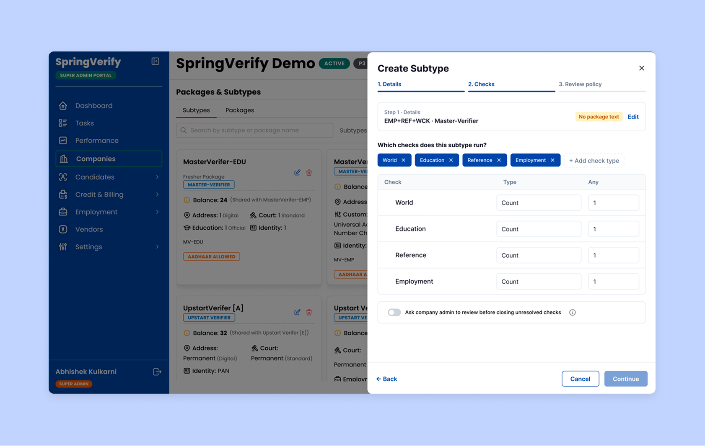

01.
One toggle turns on admin review
Super Admins: Admins set re-verification rules once, per package – which checks can be contested, and by whom. Grade triggers, applicable check types and the auto-close offset sit inside the same form.
